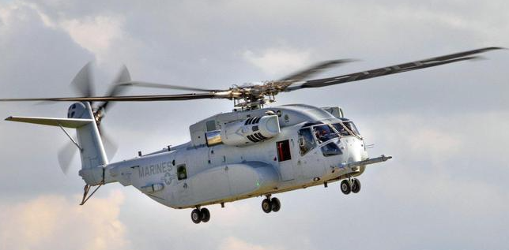

|
|
|
|
盘点一些世界著名的军用直升机
CH-53K国王种马

CH-53K国王种马是CH-53E超级种马的升级版本，是一度除俄罗斯米-26之外最大的重型直升机。起初为了满足美海军陆战队的作战需求，有效载荷不足16吨，可以运载37名士兵。并用于将车辆、物资和部队从舰艇转移到岸上。国王种马还能够携带重武器，各种型号车辆，LAV-25装甲车以及大约55名士兵。海军常让其转运补给物资
贝尔波音V-22鱼鹰
这种直升机被美国海军、陆军、海军陆战队等广泛使用。它的独特设计将固定翼涡轮螺旋桨飞机和标准直升机垂直升降能力相结合。
所以人们更倾向于称呼为“倾转旋翼机”，鱼鹰的内部可容纳24名士兵和超过19,800磅的有效载荷，外部挂载近15,000磅。这架直升机飞行速度是传统直升机的两倍。
令人感到新奇的是，鱼鹰可以进行空中加油，而且还能安全降落在地形复杂的地方。
欧洲直升机公司EC725
欧洲直升机公司的EC725又称“超级美洲狮”，是一种战术远程运输直升机。2000年首飞，5年后交付法国空军。内部有效载荷约为12,500磅，外部有效载荷超过9,900磅，常用于执行搜救，运输货物和疏散人员等任务。
目前还出口到墨西哥，巴西，印度尼西亚和马来西亚等国家使用。
昌河Z-18
中国有史以来最大的重型直升机，可容纳近30名乘客。曾经创造过在近30,000英尺的高海拔下，围绕珠穆朗玛峰飞行，并打破世界纪录。该型直升机由昌河飞机工业集团研发，制造商使用了钛和复合材料制造。
|
|
| |